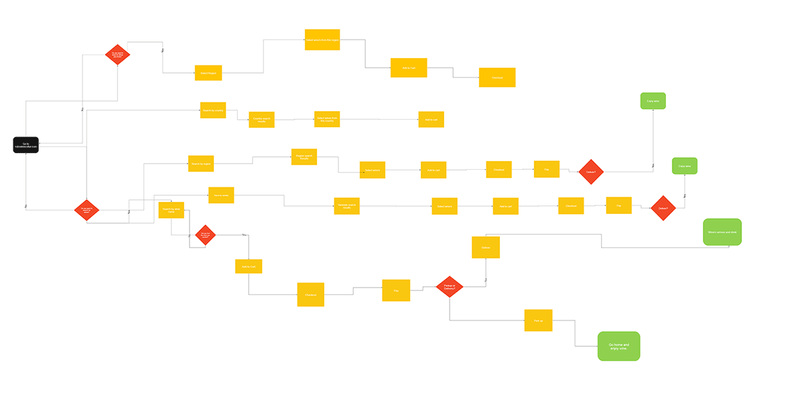

Fine Wine, On-line Delivered On Time
Explore the best digital wine buying experience
in Brooklyn.
Overview
BK Wine Cellar is a local wine store in Brooklyn (BK) that does not have a well designed ec-commerce website for its customers to be able to view its wine collection, and order wine for delivery.
The Team & Timeframe
Robert Harris is the UX Researcher, Information Architect, and Visual Designer. The project time frame was a 2 week sprint.
Tools & Methods Used
- Closed card-sorting
- Contextual Inquiry
- Competitive & Comparative Analysis
- Miro
- Figma
- Adobe CC
Problem
BK Wine Cellar's customers can't shop on their website.
Local wine lovers want to be able to search the site – bkwinecellar.com - by region, categories and varietals so that they can easily find and purchase their favorite wine/s and have it or ready for pickup at the store.
Solution Overview
How might we design an e-commerce website for BK Wine Cellar's customer?
The challenge was to design and build a user-centered website for BK Wine Cellar that organized the wines in proper categories and provided navigation and search for the user to be able to easily find and purchase wines and have them delivered.
Approach
Gather users in an organic and natural setting.
My journey of discovery began on Easter Sunday, April 2021, where I we organized a dinner party with a group of women ranging in age from 30-45. My first insight was that all of the women ordered their wine form various local wine stores but all of them were order by their mobile phones. I asked them about their experience with buying wine and how they normally go about the process. We also talked about the websites of local retailers and what they felt about the sites.
I organized a small group of 5 people and took notes as they ordered wine from local retailers. As the gathering evolved the participants would order wine from their preferred local retailer and discuss what they liked about the site/app and/or the retailer’s collection. Being able to get a group together and observed them organically made gathering data and getting insights easy
Activities & Deliverables
Lots of research, architecture, and design hours.
BK Wine Cellar's website solution will provide its customers with the ability to search the stores inventory, buy wine and have it delivered.
Research
Contextual Inquiry and User Interviews
By observing the participants within the context of buying wine at an, and during, I was able to question and observe how they order wine and why they use the method that they use - mobile phone. As people arrived over the 5 or 6 hours that we were gathered we talked about their favorite local wine stores and their sites and apps.
Observations
- Accounts set up with their favorite local wine stores
- Delivery was preffered method of getting wine
- Site content was organized and searchable for users/customers
Persona
Works hard and wants relaxing to be easy.
Our user base is the busy urban professional woman. She may work long hours and does not want to have to stop at a wine store to buy and pick up wine. She is tech savvy and has become accustomed to buying having everythinf delivered.
Closed Card Sorting
Users tell us about our content organization?
The closed card-sort gave me insights on how the navigation should be organized. We gave 5 users specific categories to place the 75 inventory items into. We designed our navigation, search filters and pages from these insights. The choice of using a closed sort was to limit the categories to how wines are grouped in the industry by professionals.


Competitive Analysis
BK Wine Cellar's competitors have great websites.
Design
Design for search, navigation and checkout.
Site Map

User Flow
We created a user flow that expects to be able to search and/or go directly to the wine varietals, regions and coutries that the customer is looking for. If a user is signed up he/she can see the wines that they bought and repurchase it/them.
No matter what choice the user makes, they will be able now check out and complete their purchase online and select delivery to a selected address.
Visual Design
A great online wine buying experience.
The visual design incoporates all of the UI elements and functionality found in other e-commerce wine sites. We have incorporated search and faceted search to help users select wine by ratings, price, region and country.
The solution is visually appealing as we chose colors and fonts that appeal to food and wine buyers and add elegance to the experience.
Consumers can easily navigate the site and find the category of wine that they are looking for, add it to their shopping cart, pay for it, and select an address for delivery.
Results & Reflections
Great MVP, improvements remain for overall user experience.
We have been able to this project of to a great start and put BK Wine Cellar into the online wine game to serve it's customers. The initial problem has been identified and addressed, but we can improve.
One of our next steps will be to continue working on the visual experiecne of the site. I believ that we can improve the color scheme and font choice into a more elegant experiecne. We will also look at how the functionality can be improved and what features can be added.